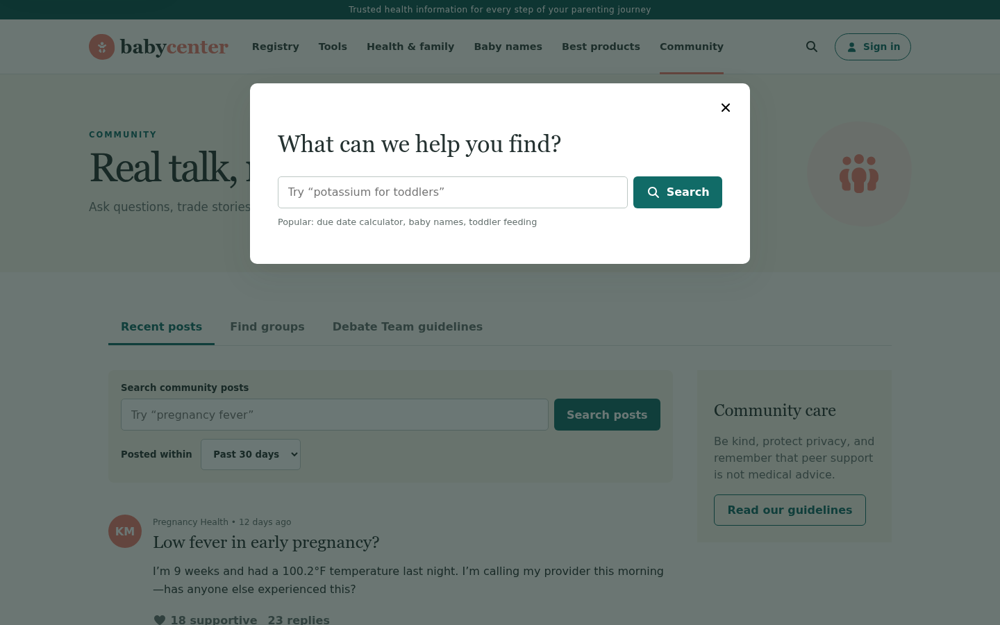

MULTI-PAGE COUNTEREXAMPLE · FM3 / FOC07
The page changes behind the modal.
In the BabyCenter GenUI build, keyboard focus escapes an open search modal, Escape does not close it, and a background link changes the route while the same modal remains.
BABYCENTER/community → /coursesREAL EXPLORATION TRACE
one modal episode · two routes · same modal context
Tab × n
Escape
Enter
CAPTURED GENUI STATEs0 · Search receives focus

Why it generalizes: the rule reads semantic modal and focus signatures, not BabyCenter selectors or page names.
Evidence status: verified engineering trace; the campaign result remains inconclusive until targeted replay. The old “dismiss” label is excluded because the target was not a dismiss control.